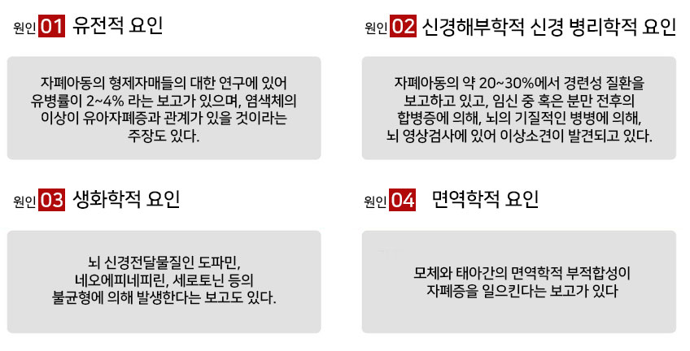
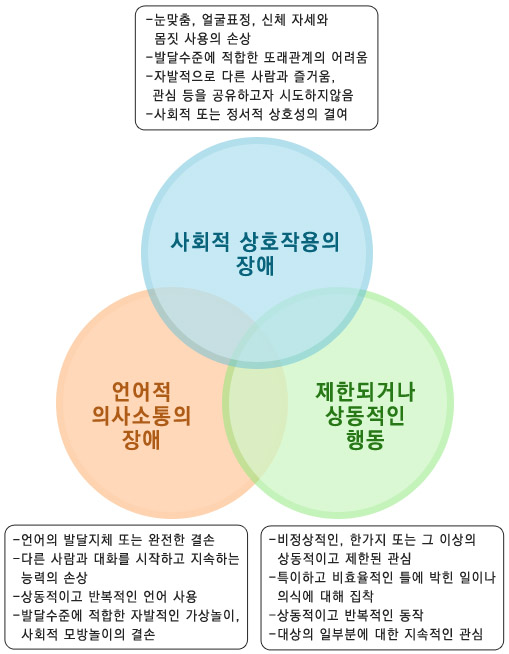

자폐 스펙트럼
<자폐스펙트럼이란?>

자폐 스펙트럼 장애 (Autism Spectrum Disorder, ASD)는 일반적으로 생후 3년 이내에 나타나는 신경 발달 장애 중 하나로 반복적인 관심이나 행동의 특징을 보이면서 사회성 및 언어 능력의 결핍이 특징적인 질환입니다. 여러 연구에 따르면 자폐스펙트럼 장애는 뉴런이라는 신경세포로 구성되는 대뇌 피질 영역에서 신경세포의 연결이 정상적으로 발달되지 못하는 것과 관련이 있다고 알려져 있습니다. 즉 대뇌 피질의 신경 회로가 정상적인 성장 패턴보다 덜 발달되어 대뇌 피질 영역 간의 중요한 연결이 부족해져 언어, 사회적 기술 및 행동 결함의 증상들이 나타나게 됩니다.
<원인>
대부분의 경우 자폐스펙트럼 장애의 원인은 정확하게 알려져 있지 않습니다. 여러 연구에 따르면 유전자와 태아기 및 환경 조건과 같은 외부 요인 간의 상호 작용으로 인해 발생할 수 있다고 알려져 있습니다. 반면 예방접종이나 단순히 잘못된 양육 방식으로 자폐스펙트럼 장애가 발생하지는 않습니다.
<증상 및 징후>
아이에게 자폐 스펙트럼장애를 의심할 수 있는 초기 징후들은 12개월까지 옹알이, 가리키고 말하기, 의미 있는 제스처를 사용하지 못하거나, 16개월까지 한 단어를 말하지 못할 때, 24개월까지 두 단어 연결이 안될 때, 어느 연령에서든 잘 하던 언어와 사회성 기능이 퇴보하는 점이 있습니다. 하지만 이러한 징후 중 몇 가지를 보인다고 해서 반드시 자폐증이 있는 것은 아니므로 지속적인 관찰과 평가가 필요합니다. 자폐스펙트럼 장애는 다음의 세 가지 발달 영역에서 뚜렷한 발달 지연을 보이게 됩니다.
